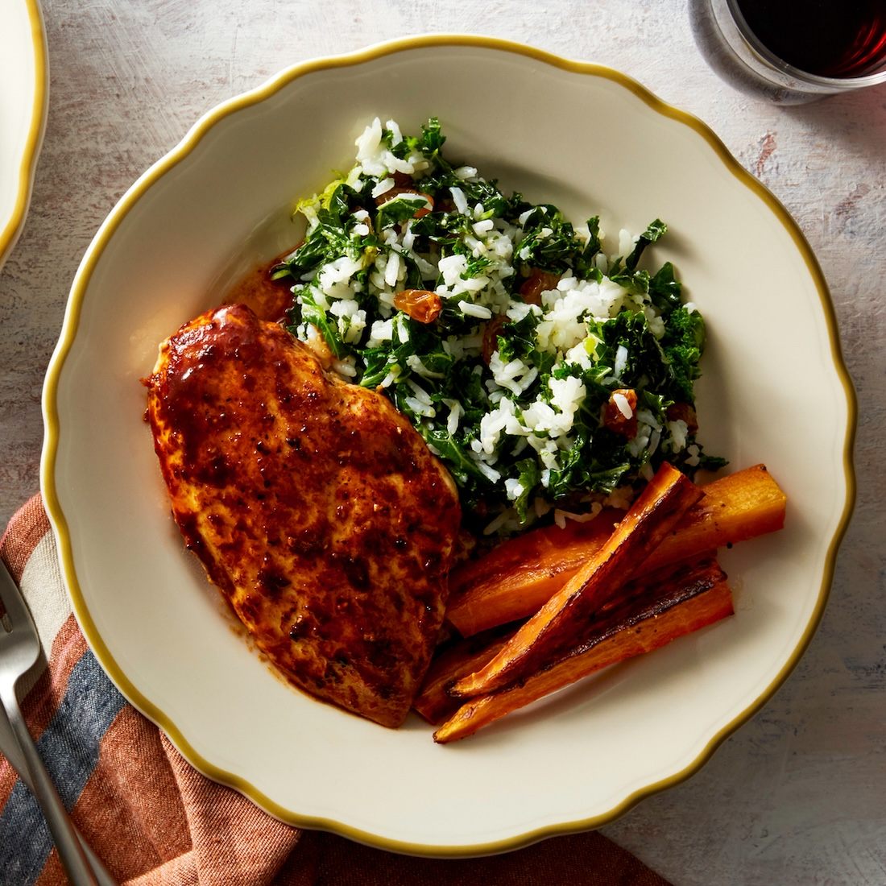

Beef Medallions with Mushroom Sauce and Mashed Potatoes
General Tso's Chicken with Bok Choy and Jasmine Rice

Ancho-Orange Chicken with Kale, Rice, and Roasted Carrots
Bucatini Alfredo with Broccoli
Crispy Fish Sandwiches with Tartar Sauce and Roasted Sweet Potato Wedges
Broccoli Mozarella Calzones with Ceaser Salad
 Cheesy Enchiladas Rojas with Broccoli and Kale
Cheesy Enchiladas Rojas with Broccoli and Kale
Bucatini with Tomato Sauce and Roasted Broccoli
Broccoli Basil Pesto Sandwiches with Romaine Citrus Salad